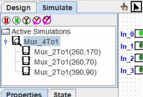
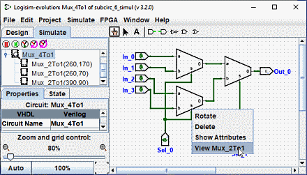
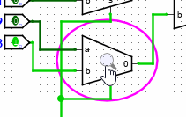
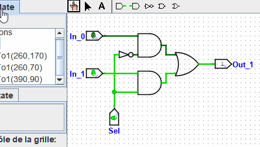

调试子电路
在测试较大电路时，您很可能会发现错误。为了查明问题所在，在运行整体电路的同时探索子电路内部的情况会有所帮助。要进入子电路的状态，可以使用三种不同的技术之一。
最直接的方式是点击仿真选项卡，或者选择菜单| 项目 |→| 查看仿真树 |。这将切换资源管理器窗格，使其显示正在仿真的子电路层次结构。

双击该层次结构中的任一元素将显示该子电路内部的情况。
进入子电路的第二种方式是：通过右键单击或 Ctrl+单击 打开它的弹出菜单，然后选择 | 查看 “电路名称” |。

第三种方式是，首先确保选中手形工具（ ），然后单击您想要进入的子电路；子电路中心会出现一个放大镜，双击该放大镜即可进入子电路的状态。
），然后单击您想要进入的子电路；子电路中心会出现一个放大镜，双击该放大镜即可进入子电路的状态。

无论使用哪种方式，一旦您进入子电路，就会看到子电路中引脚的值与外部电路通过它们发送的值匹配。

在子电路中，您可以修改电路。如果更改影响了子电路的任何输出，它们将被传播到外部电路中。但有一个例外：子电路的输入取决于来自外部电路的值，因此切换这些值没有意义。如果您试图使用手形工具点击子电路的输入引脚，将弹出一个对话框，询问：该引脚连接到外部电路状态。是否创建新电路状态？单击“否”将取消切换请求，而单击“是”将创建一个与外部电路分离的当前状态副本，同时输入引脚被切换。
完成查看和/或编辑后，您可以通过双击资源管理器窗格中的父电路，或者通过菜单| 仿真 |→ | 返回状态 “电路名称” |返回到父电路。
下一节： Logisim 库。